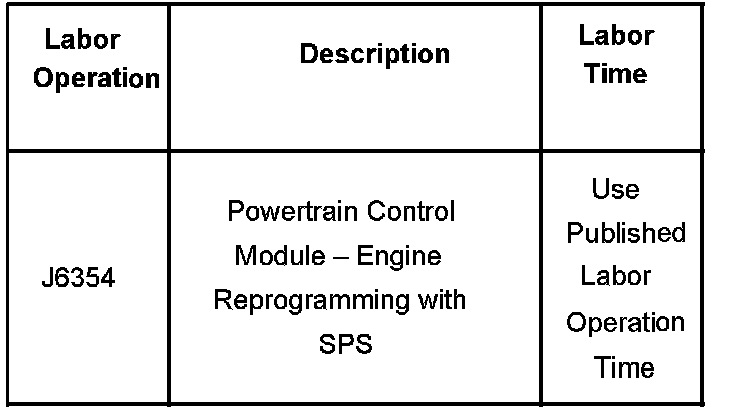

Engine Controls - Chirping Noise On Engine Start Up
Bulletin No.: 07-06-04-004Date: January 31, 2007
TECHNICAL
Subject:
L92 Engine Noise When Started, Described as Chirp or Squeak (Reprogram ECM)
Models:
2007 Cadillac Escalade, Escalade ESV, Escalade EXT
2007 GMC Yukon Denali, Yukon Denali XL
with Vortec(TM) 6.2L V8 Engine (VIN 8 - RPO L92)
Condition
Some customers may comment that, when the engine is started, there is a noise that sounds like a chirp or squeak coming from the engine compartment and then goes away. Upon investigation, the technician may think this is accessory drive belt noise, but actually the noise is coming from the exhaust system.
Cause
The noise is from the engine calibration for lighting off catalyst for 100 seconds during cold start, which sounds like an accessory drive belt chirp or squeak.
Correction
Do not replace the accessory drive belt or the generator for this condition.
Reprogram the ECM with the latest calibrations if the above concern is encountered. An updated ECM calibration is now available to address this concern. This calibration, or any that follow, is designed to address this concern. Refer to Service Programming System (SPS) using the appropriate Service Information (SI) procedures. The new ECM calibrations will be available to dealerships in TIS2WEB (website version of TIS) beginning 10/15/06. If you cannot access the calibration, call the Techline Customer Support Center.
Warranty Information

For vehicles repaired under warranty, use the table.

Disclaimer